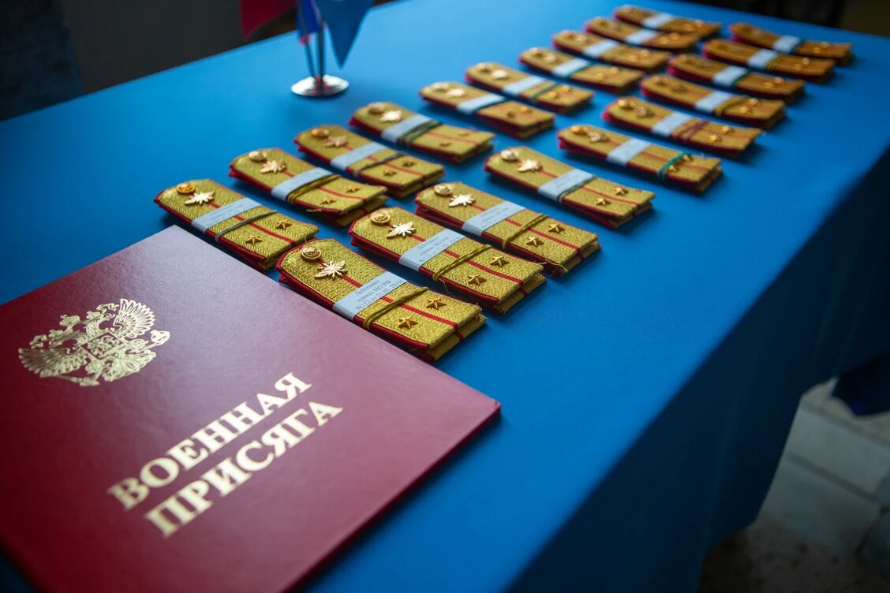

Московский государственный институт радиотехники, электроники и автоматики (технический университет)
Военная подготовка

Кафедра образована в 1969 году.
Первый выпуск офицеров запаса состоялся в 1971 году.
В 2019 году военная кафедра преобразована в военный учебный центр.
Военной кафедрой, военным учебным центром руководили:
1970-1975 гг. полковник СОНЧИК С.С., доктор технических наук, профессор
1975-1990 гг. полковник КАЗАКОВ В.Д., кандидат технических наук, профессор
1990-1995 гг. полковник БУРОВ С.В., кандидат технических наук, доцент
1995-2013 гг. полковник ВВЕДЕНСКИЙ В.Л., кандидат технических наук.
C 2013 г. по настоящее время полковник КАРГАПОЛЬЦЕВ А.А., кандидат военных наук, доцент
Общие сведения
Военный учебный центр создан при РТУ МИРЭА в целях подготовки офицеров и солдат запаса граждан Российской Федерации, обучающихся в РТУ МИРЭА по очной форме обучения по образовательным программам высшего образования.
Студенты, успешно прошедшие обучение в военном учебном центре и окончившие Университет, зачисляются в запас с присвоением воинского звания «рядовой» или «лейтенант», в зависимости от программы военной подготовки, призыву на военную службу не подлежат.
Выпускники Университета, прошедшие обучение в военном учебном центре, имеют возможность поступить на военную службу по контракту в различные силовые ведомства или на государственную службу в добровольном порядке
Основной задачей военного учебного центра является:
реализация программ военной подготовки офицеров и солдат запаса по военно-учетным специальностям;
участие в проведении воспитательной работы и работы по военно-профессиональной ориентации молодежи.
Основой концепции военного обучения граждан являются фундаментальные знания, получаемые студентами в ходе освоения специальных дисциплин по основной образовательной программе.
Особенно благоприятные условия для реализации этой концепции сложились в РТУ МИРЭА, поскольку Университет тесно взаимодействует с ведущими предприятиями оборонно-промышленного комплекса и имеет на многих из них базовые кафедры;.
Направления подготовки офицеров и солдат запаса в военном учебном центре РТУ МИРЭА установлены с учетом направлением и специальностями подготовки студентов по основным образовательным программам.
Изучение гражданами учебных дисциплин по программе военной подготовки проводится на базе знаний, получаемых ими в ходе освоения специальных дисциплин по образовательной программе, необходимых для получения:
гражданами, обучающимися по программе военной подготовки офицеров запаса, - высшего образования - специалитета или магистратуры;
гражданами, обучающимися по программе военной подготовки солдат запаса, - высшего образования - бакалавриата или специалитета.
В военном учебном центре проводится подготовки офицеров запаса по 6 военно-учетным специальностям:
Применение бортовых авиационных средств РЭБ;
Эксплуатация и ремонт бортовых авиационных средств РЭБ;
Применение подразделений и частей с электропроводными средствами связи;
Эксплуатация и ремонт аппаратуры электросвязи;
Эксплуатация и ремонт радиотехнических средств обеспечения полетов авиации.
Программное обеспечение систем специального назначения
По двум военно-учетным специальностям подготовки солдат запаса:
Ультракоротковолновые и дециметровые радиостанции малой мощности;
Малоканальные радиорелейные станции.
Количество граждан, проходящих военную подготовку, устанавливается Министерством образования и науки Российской Федерации на основании заказа Министерства обороны Российской Федерации.
 Московский государственный институт радиотехники, электроники и автоматики (технический университет)
Московский государственный институт радиотехники, электроники и автоматики (технический университет)